Introduction of Realtime Analyzer
Realtime Analyzer is a virtual measurement instrument. Acoustic, vibration, or electronic signals are measured and analyzed in real-time. Measurement data can be saved as picture, text, or sound file (wav format) for making documents, presentation, and other processing. Advanced measurements like THD (Total harmonic distortion), impulse response, and running ACF are available in the higher versions of DSSF3.
Real-time analyzing features include:
Oscilloscope: Input signal waveform will be displayed in real time. No difficult settings are needed. By just clicking the Start button, the signal is triggered, the level range is adjusted, and the waveforms are displayed in the proper positions. Separate 2ch mode and X-Y mode (Lissajous) are supported. Snapshots of the measurement screen can be easily taken at any time.
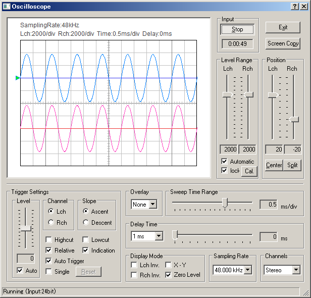
FFT analyzer: Nine measurement modes are available: Power spectrum, 1/1 to 1/24 Octave band analysis, Waterfall plot, Correlation meter, Phase meter, and Spectrogram. By using the octave band analyzer, function of the standard sound level meter can be significantly extended. Real-time spectrogram is a valuable tool for singing voice training or speech therapy.
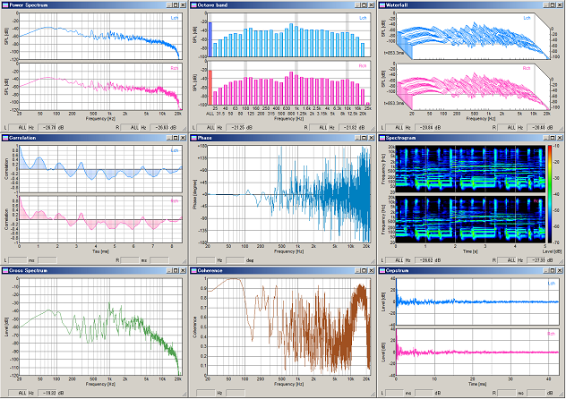
Microphone calibration: For measuring the sound pressure level (SPL), the input level sensitivity can be easily calibrated. The sound level meter or the acoustic calibrator can be used as a reference. Microphone's frequency response can also be compensated using data provided by the manufacturer. This is a useful function in measuring the frequency response of audio devices, such as the amplifier or the loudspeaker.
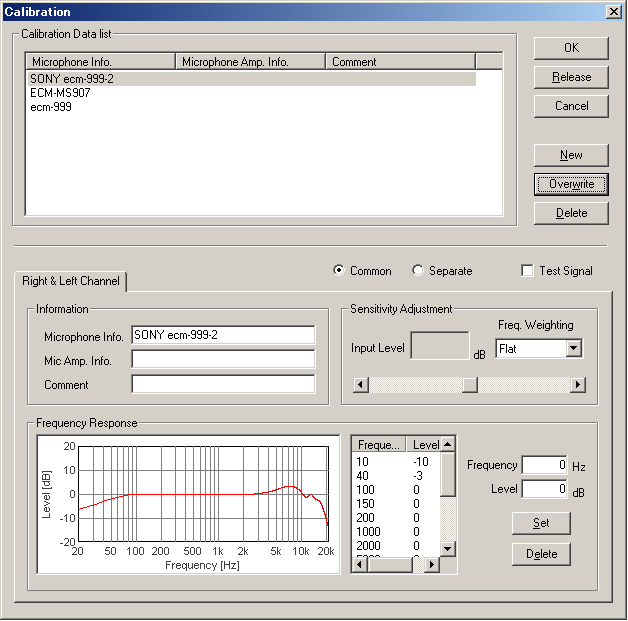
Signal generator: Tone, noise, sweep, pulse, complex tone (synthesis), and musical scale generators are available. Those signals are very useful for audio measurement.
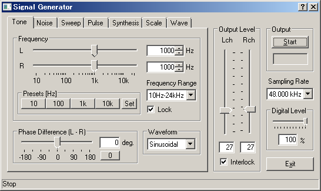
Data recording capabilities are:
Sound recorder: Playback of the recorded sound can be measured by the real-time analyzer simultaneously. Sound files saved as a .wav format can be read. Sampling frequency up to 96 kHz and resolution of 8, 16, 32 bit is supported.
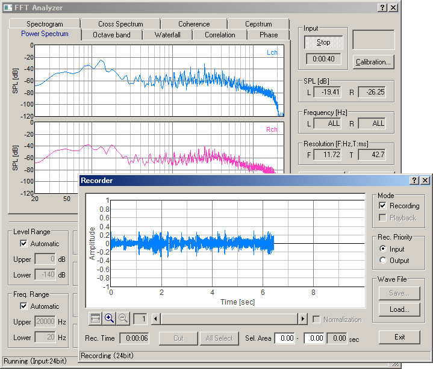
Data record / export in the octave band analyzer: On the FFT analyzer, data record button is added. During the octave band analysis, click this button to open the data recording window. Measurement results are automatically recorded at the specified intervals. Recorded data can be saved by CSV format.
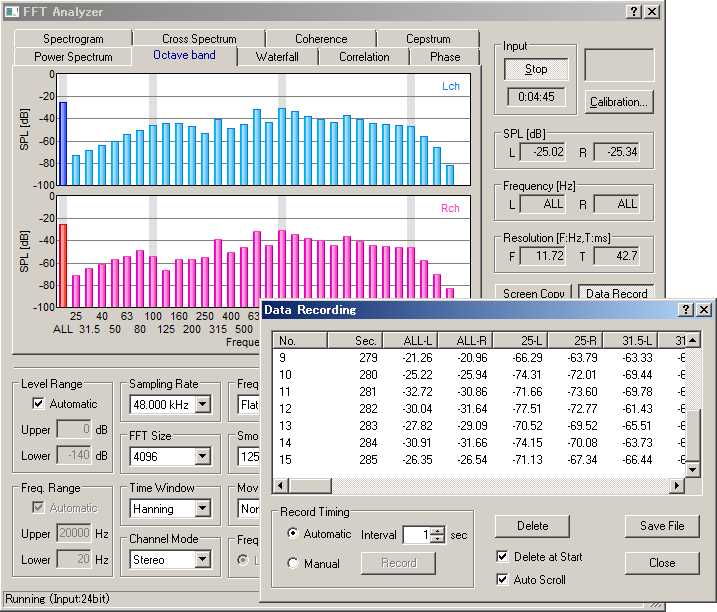
Snapshot in the FFT analyzer and the oscilloscope: Screen copy button is available on the FFT analyzer and the oscilloscope window. Snapshots of a measurement screen can be created by one click. You can record any number of measurement screens during a measurement. It is convenient for comparison and printing of measurement results.
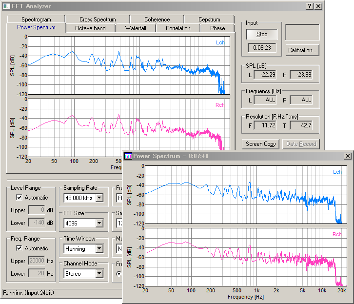
Incorporation with image database software MMLIB: For saving and printing the measurement screen as picture files, we recommend the image database software, MMLIB. Measurement data and graph images can be easily stored to construct a measurement database.
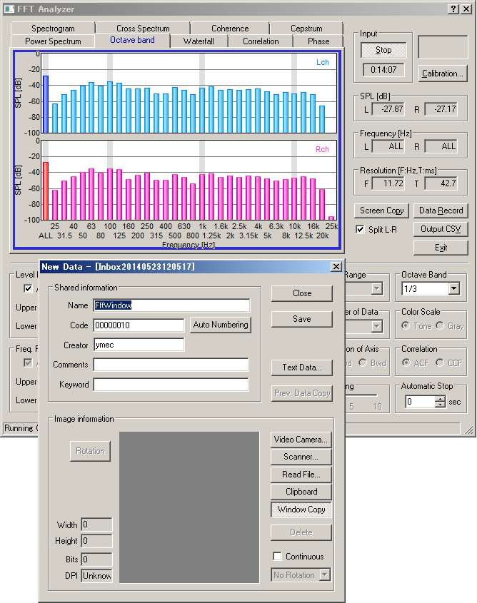
Advanced measurement functions include:
Frquency Response: A frequency Response is the thing which made a change of a level for frequency a graph and, here, can survey it by a frequency sweep, spot frequency, three kinds of methods of a pink noise.
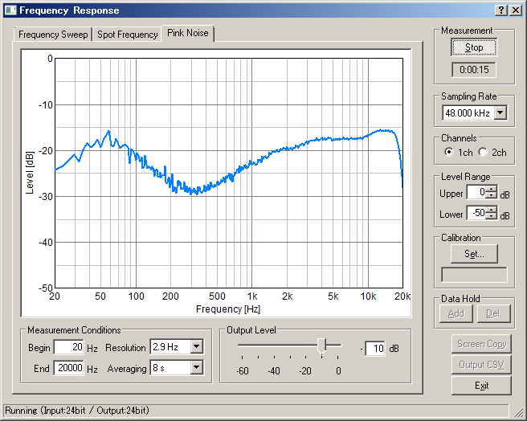
THD analyzer: Total Harmonic Distortion of the audio system can be measured for evaluating the linearity of the system. THD is defined as the ratio of the geometric mean of the harmonics (v1, v2, v3, v4, v5, ... v30) and the fundamental (v1), expressed in dB or %. THD Analyzer clarifies the quality of the measurement system in an instant. If you use the THD analyzer for maintenance or a check before the measurement, the accident would decrease dramatically.
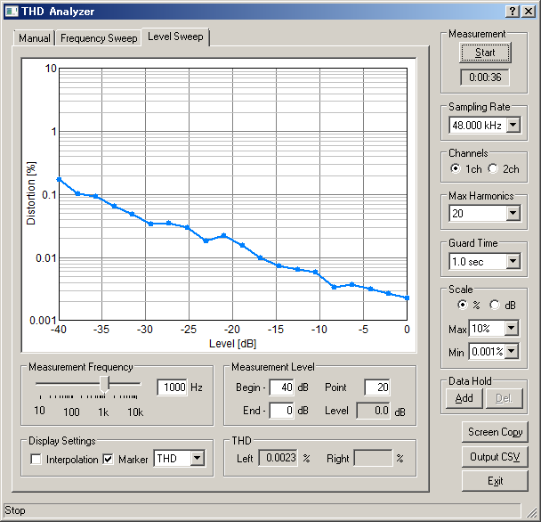
Impulse response measurement: Automatic measurement using MLS or TSP methods ensures accurate acquisition of the clean impulse response. Using Sound Analyzer, the room acoustical parameters (i.e. reverberation time, speech intelligibility, and so on) will be calculated from the impulse response.
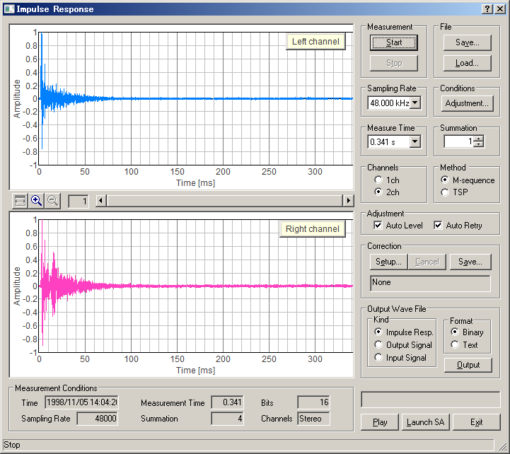
Running ACF measurement: The most advanced feature of DSSF3 is that the time change of sound qualities can be analyzed with a high temporal resolution (up to 0.001 s). In addition to SPL, sound qualities such as pitch, pitch strength, reverberation, and spatial information such as the location and the width of sound source will be calculated.
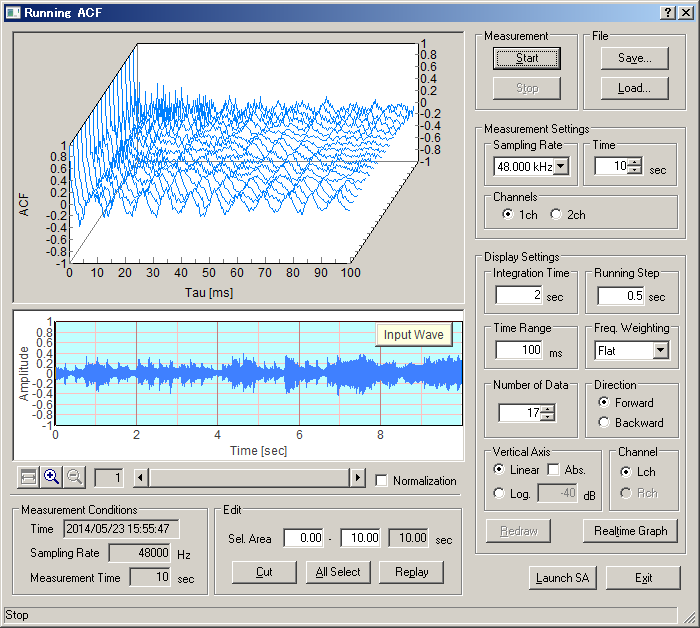